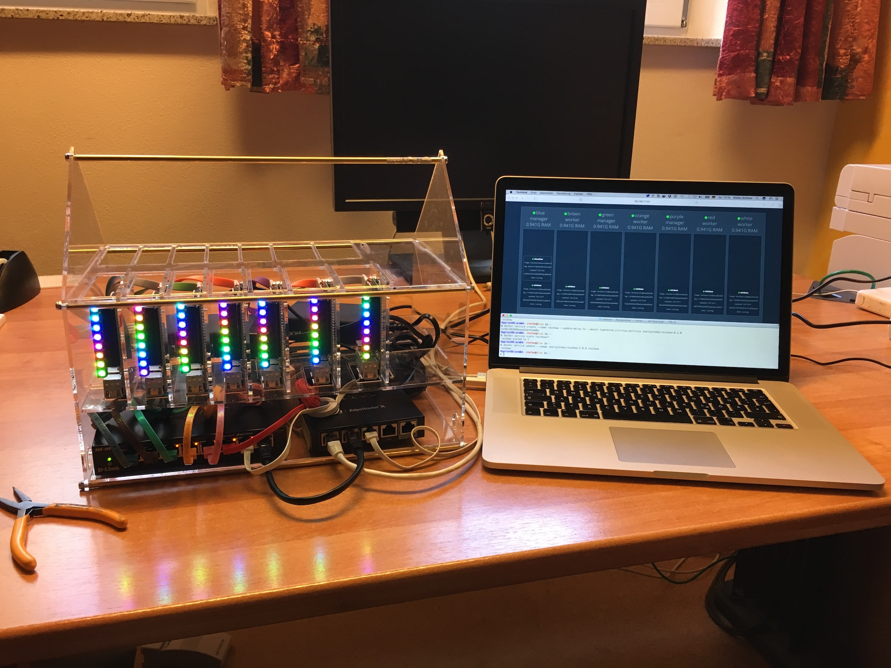
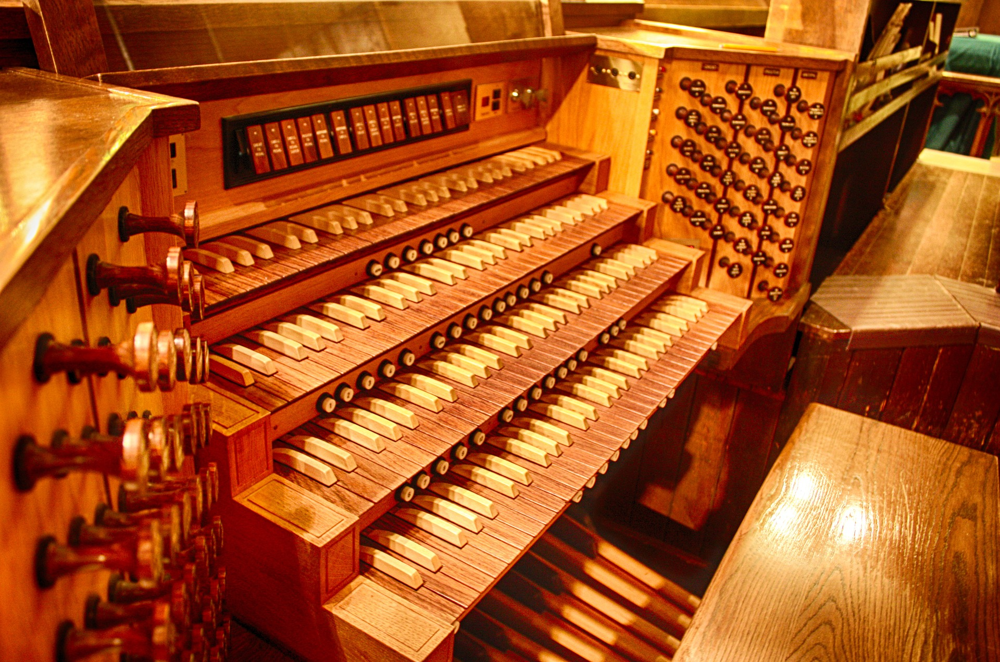

I'm more than happy that I can make it to DockerCon in Austin, Texas. It is only a few weeks until the workshops and conference starts April, 17th. If you still need some good reasons why you should attend I can give you some ideas. And you will get 10% discount with the code CaptainStefan.
Workshops
On Monday I'll be at the workshop Modernizing monolithic ASP.NET applications with Docker where you can get some hands-on experience with Windows containers. You cannot have a better place if you want to get started with Docker on Windows. Michael Friis and Elton Stoneman from Docker and myself can answer all your questions.
See some Docker Swarm demos
Come to the Community Theater on Tuesday, Apr 18th, 1:00 PM to see my live demo Swarm 2 Go and how our team at SEAL Systems has built a portable multi-arch data center with Raspberry Pi and UP boards.

You will have the chance to play the chaos monkey and unplug cables to see Docker swarm mode in action. With the help of LED's we can visualise failures and how Docker swarm gets healthy again. All steps to build such a cluster is available in an open source repo.
Learn about Docker on Windows
Docker is no longer a thing only on Linux. There are several talks about Docker on the Windows platform that I want to see.
- Docker for .NET developers with Michele Leroux Bustamante, CIO, Solliance
- Escape your VMs with Image2Docker with Elton Stoneman from Docker and Docker Captain Jeff Nickoloff
- Beyond \ - the path to Windows and Linux parity in Docker with Taylor Brown, Principal Lead Program Manager, Microsoft
- Creating Effective Images with Abby Fuller, Technical Evangelist, AWS
And I also recommend to visit the Microsoft booth to hopefully see some Docker swarm mode on Windows Servers. I really look forward to see the latest news and talking with some of the Microsoft Container and Networking team.
Multiple platforms
If you think Docker is only Linux on Intel machines, then comparing it to an instrument it may look like this.
But as you can see the talks above, Docker is available on multiple platforms: Linux, Windows, from small ARM devices like the Raspberry Pi to big IBM machines.
So the whole spectrum of Docker more looks like this, and once you learned the Docker commands you are able to play this:

So it is time to learn how easy it is to deploy your applications for more than one platform.
- From Arm to Z: Building, Shipping, and Running a Multi-platform Docker Swarm with Christopher Jones and Christy Perez from IBM
See you at DockerCon! Ping me on Twitter @stefscherer or with the DockerCon app to get in touch with me during that conference week.